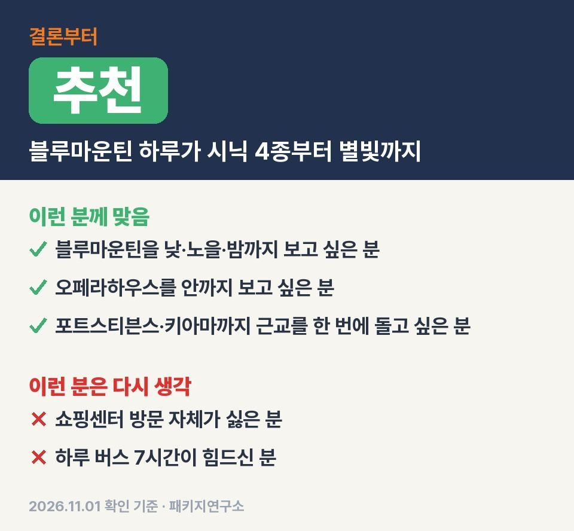
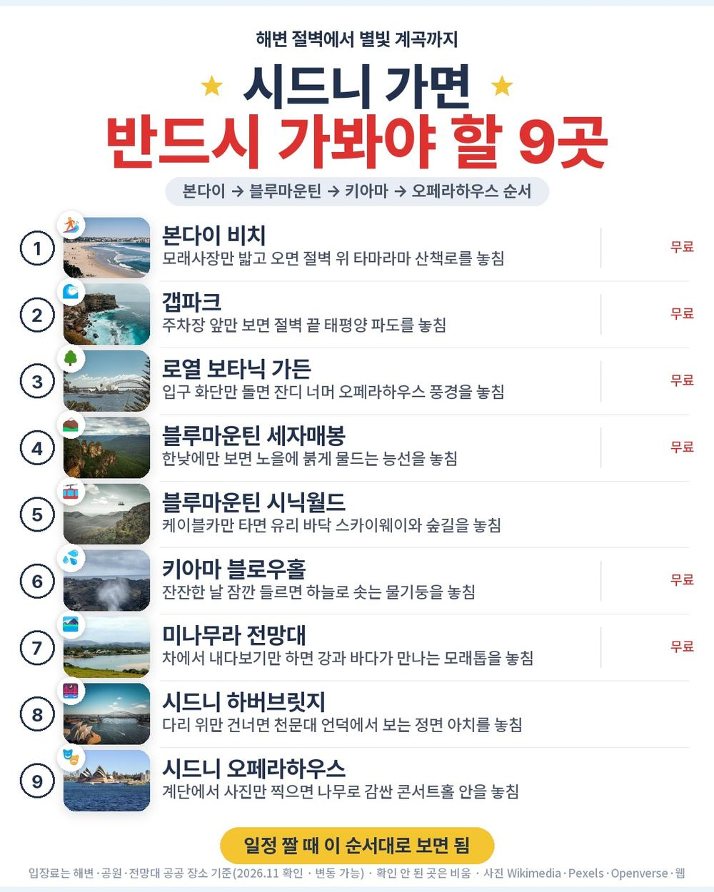
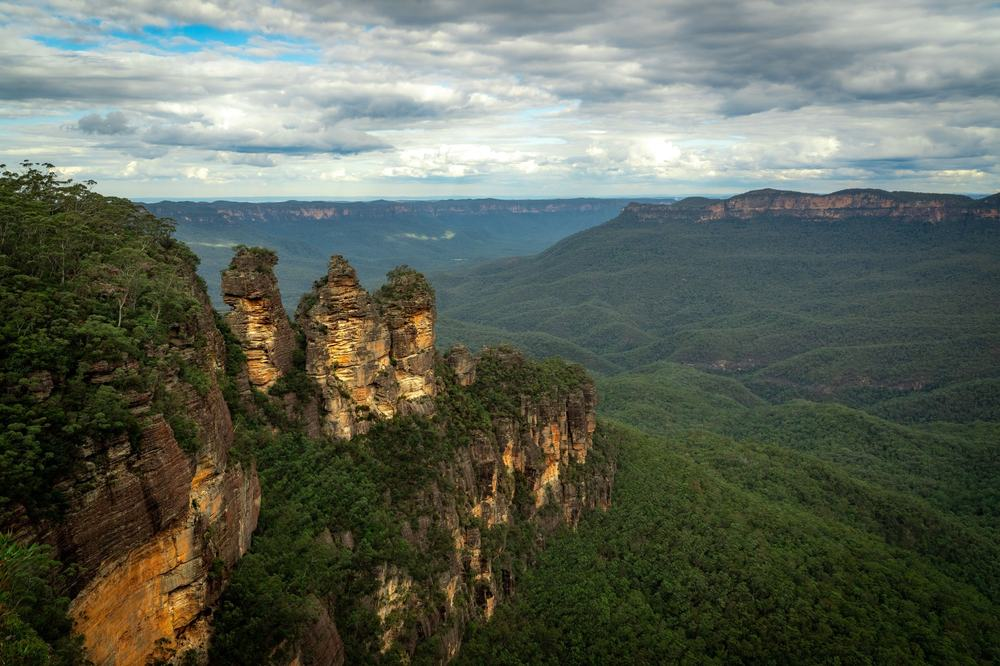
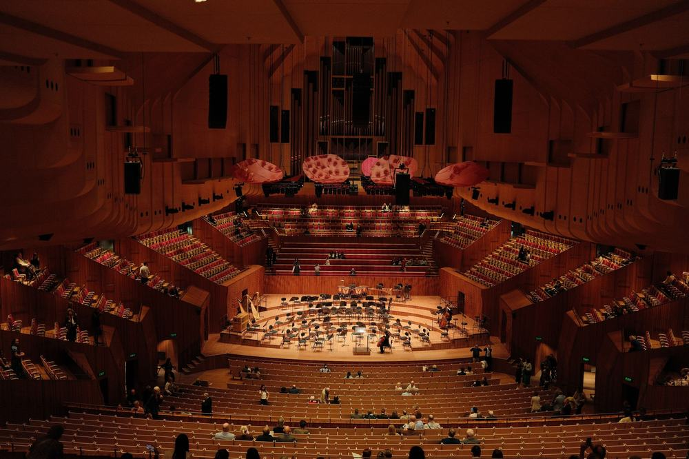
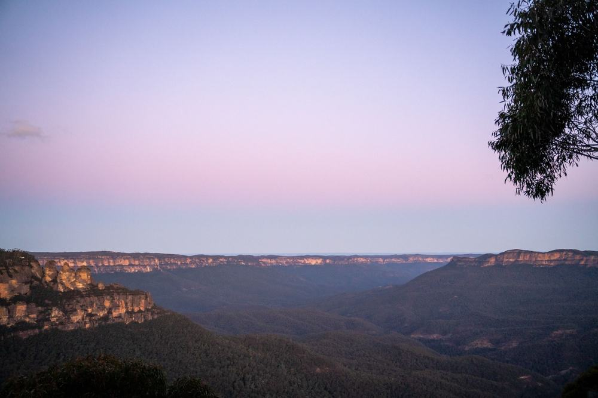
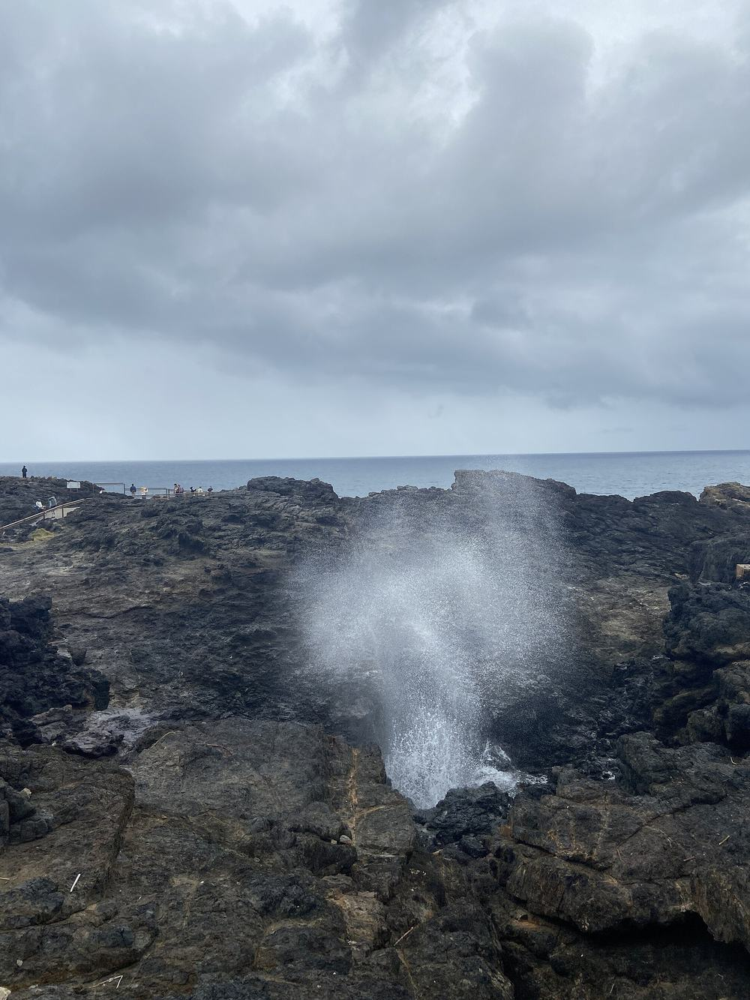
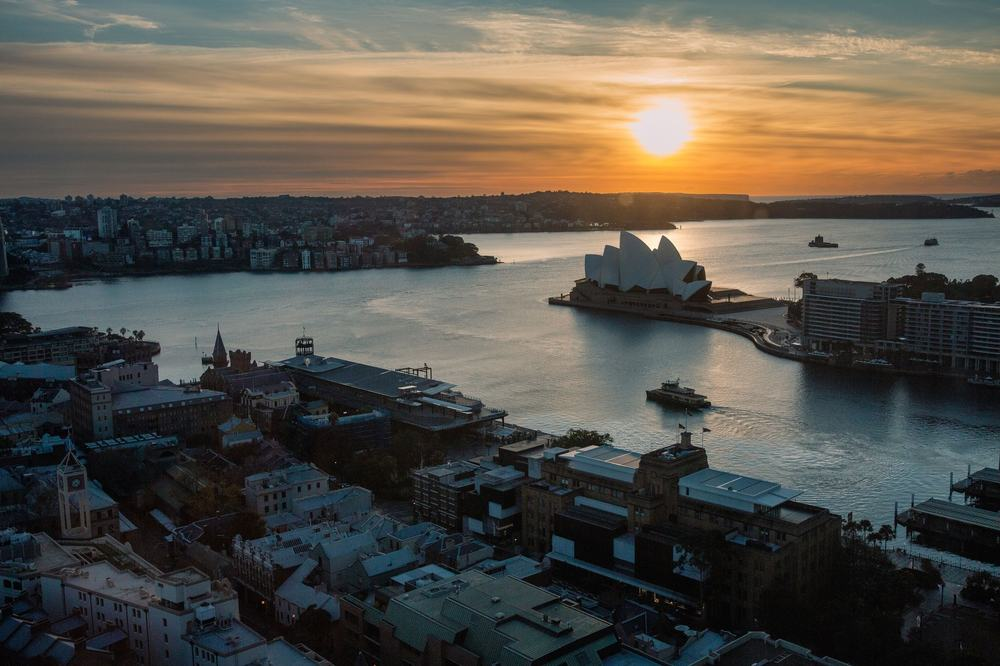

같은 시드니 5박 7일인데 값이 159만원대부터 449만원대까지 벌어져 있음. 그중 304만 9천원짜리 하나투어 상품은 블루마운틴에서 시닉월드 4종을 타고 노을과 별까지 보고 내려옴.
직접 다녀온 후기는 아니고 하나투어 일정표와 포함·불포함 원문을 같은 일정 다른 값 상품들과 나란히 놓고 따져 본 글임.
결론 — 추천. 오페라하우스 내부 투어, 크루즈 두 번, 블루마운틴 낮·노을·밤이 다 들어 있고 선택관광이 없음. 다만 쇼핑센터 방문 자체가 싫은 분은 맞지 않음.

같은 목적지 패키지 오늘 값 나란히 비교
https://package-researcher.github.io/d/sydney.html?s=art

| 항목 | 내용 |
|---|---|
| 가격 | 1인 3,049,000원 (성인 · 11월 출발 기준) · 2인 6,098,000원 |
| 여행사 | 하나투어 |
| 항공 | 아시아나 직항 (OZ601·OZ602) · 인천 20:00 → 시드니 08:20 / 시드니 10:20 → 인천 19:00 |
| 숙소 | 4성 호텔 5박 (예정 리지스 뱅스타운 · 출발 전 확정 · 시즌엔 분박 가능 · 2인 1실) |
| 일정 | 5박 7일 · 버스 · 한국어 가이드 · 식사 14회(6대 특식) · 쇼핑 3회 · 선택관광 0개 · 가이드·기사 경비 1인 70달러 별도 |
▶ 내 출발일 오늘 기준 요금 확인 (제휴 링크 · 예약 시 수수료를 받으며 가격은 같습니다)
▶ 11월 2일 기준 시드니 패키지 최저 139만 9천원부터 — 출발일별 값 한 화면에: 비교 페이지
같은 일정을 제트스타항공으로 가면 1인 179만 9천원임 (11월 1일 기준 · 출발일마다 다름).
| 번호 | 내용 | 한 줄 답 |
|---|---|---|
| 1 | 같은 시드니 5박 7일 값대 3개 | 159만원대~353만원대 |
| 2 | 더 내면 달라지는 것 | 항공·경비·관광 |
| 3 | 이 상품 값에 들어 있는 것 | 관광 31곳 |
| 4 | 현장에서 더 낼 돈과 직접 짜면 | 2인 약 22만원 |
| 5 | 맞는 분 · 안 맞는 분 | 3 대 3 |

네이버 패키지에서 인천·김포 출발 시드니 5박 7일만 골라 보면 18개임. 그중 제일 싼 쪽, 이 글 상품, 비싼 쪽 하나씩 놓아 봄.
| 값대 | 값 | 여행사 | 항공 | 쇼핑 | 가이드 경비 | 식사 |
|---|---|---|---|---|---|---|
| 최저 | 1,599,000원 | 모두투어 | 트리니티항공 직항 | 3회 | 70달러 | 15회 |
| 이 글 | 3,049,000원 | 하나투어 | 아시아나 직항 | 3회 | 70달러 | 14회 |
| 상위 | 3,539,000원 | 모두투어 | 대한항공 직항 | 3회 | 포함 | 16회 |
세 상품 모두 쇼핑은 3회로 같음. 시드니 패키지는 값이 달라도 쇼핑 횟수는 거의 안 바뀐다는 얘기임.
같은 5박 7일 안에서 값이 두 배 넘게 벌어짐. 표만 보면 쇼핑·식사 횟수는 비슷하고 항공사와 그 안에 든 관광이 갈림.
솔직히 처음엔 304만원대면 뭐가 그렇게 다른가 싶었음. 근데 일정 원문을 펴 보면 이 상품은 블루마운틴 하루를 밤까지 씀. 게다가 오페라하우스 안으로 들어가는 투어가 따로 있음.

값 차이를 만드는 건 크게 셋임.
첫째 항공. 최저가는 트리니티항공이고 이 상품은 아시아나임. 같은 하나투어 같은 일정도 제트스타 출발이면 179만 9천원이라 항공 하나로 125만원이 갈림.
둘째 가이드 경비. 상위 상품은 경비가 값에 들어 있고 이 상품은 1인 70달러를 현지에서 냄.
셋째 관광 구성. 이 상품은 원문에 관광이 31곳으로 잡혀 있음. 블루마운틴 선셋·별빛, 오페라하우스 내부, 짐 와일드 굴 양식장 시식, 키아마·미나무라가 들어 있음.
비싼 쪽이 무조건 더 많이 보는 건 아님. 이 상품은 값의 상당 부분이 아시아나 직항에 들어가 있음. 일정은 같은 상품 제트스타판과 똑같음.
그래서 일정이 마음에 들고 항공사는 상관없다면 같은 일정 제트스타 출발을 먼저 보시면 됨. 예약 링크를 열면 출발일과 항공을 같이 고를 수 있음.

304만 9천원에 들어 있는 건 이럼.
아시아나 직항 왕복, 4성 호텔 5박, 식사 14회, 관광지 입장료, 1억원 여행자보험, 한국어 가이드, 전용 버스.
특식이 여섯 번임. 보타닉 가든 옆 테라스 파스타, 디너 크루즈 3코스, 스테이크, 슈니첼이나 피쉬앤칩스, 피자나 버거, 한식.
크루즈는 두 번 탐. 2일차 저녁 시드니 하버 디너 크루즈, 3일차 포트스티븐스 돌핀 크루즈.
4일차가 이 상품에서 제일 꽉 찬 날임. 페더데일 야생동물원에서 캥거루·코알라·웜뱃을 보고 블루마운틴으로 감. 시닉월드는 레일웨이·워크웨이·케이블웨이·스카이웨이 네 가지를 다 탐. 저녁은 스테이크고 해 질 녘 전망대에서 노을을 본 뒤 별빛 투어까지 하고 밤늦게 돌아옴.
선택관광이 0개라 블루마운틴 밤 일정이나 오페라하우스 내부 투어를 현장에서 따로 사야 하는 일이 없음.
| 일차 | 가는 곳 | 버스 | 걷기 | 점심 · 저녁 |
|---|---|---|---|---|
| DAY 1 | 인천 20:00 출발 · 기내 1박 | 거의 없음 | 적음 | 기내식 · 없음 |
| DAY 2 | 08:20 시드니 → 본다이·타마라마 코스탈 워크·갭파크 → 로열 보타닉 가든 → 디너 크루즈 | 약 2시간 30분 | 많음 | 파스타 · 크루즈 3코스 |
| DAY 3 | 포트스티븐스(와이너리·돌핀 크루즈·모래언덕 4WD) 왕복 | 약 7시간 | 보통 | 피자 · 한식 |
| DAY 4 | 페더데일 → 블루마운틴 시닉 4종·세자매봉 → 선셋·별빛 | 약 3시간 | 보통 | 현지식 · 스테이크 |
| DAY 5 | 굴 양식장 시식 → 키아마 블로우홀·등대 → 미나무라 전망대 | 약 4시간 30분 | 보통 | 피쉬앤칩스 · 한식 |
| DAY 6 | 하버브릿지·시드니 천문대 → 오페라하우스 내부 투어 → 바랑가루 | 약 1시간 30분 | 보통 | 슈니첼 또는 버거 · 한식 |
| DAY 7 | 공항 → 10:20 출발 → 19:00 인천 | 약 30분 | 적음 | 기내식 · 기내식 |
3일차 포트스티븐스는 편도 약 3시간 30분이라 버스만 7시간 탐. 대신 돌핀 크루즈·모래언덕·와이너리를 그날 한 번에 묶어 둠.
2일차는 밤 비행기에서 내리자마자 해안 산책로를 걷는 날이라 제일 많이 걸음. 무릎이 불편하신 분은 가이드에게 미리 말씀해 두시면 편함.
이 상품 조건 한눈에 (출발일 달력·두 분 값·비슷한 상품과 비교)
https://pkg-lab.com/pkg/PAP1026062A60E2OZ3/?utm_source=ghpages&utm_medium=post&utm_campaign=daily
같은 목적지 다른 여행사 패키지, 쇼핑·선택관광·가이드 경비까지 비교
https://pkg-lab.com/dest/SYD/m/2026-11/?utm_source=ghpages&utm_medium=post&utm_campaign=daily

| 항목 | 금액 | 필수/선택 | 비고 |
|---|---|---|---|
| 가이드·기사 경비 | 140달러 | 필수 | 1인 70달러 × 2명 (아동 동일) |
| 호주 ETA 비자 | 40호주달러 | 필수 | 1인 20호주달러 · 앱에서 개별 신청 |
| 선택관광 | 0원 | 없음 | 선택관광 0개 |
| 매너 팁 | 자율 | 선택 | 안 내도 불이익 없다고 안내됨 |
| 합계 (2인 필수분) | 약 22만 5천원 | 1달러 1,335원 · 1호주달러 938원 기준 |
두 분 필수분은 경비와 비자 두 가지임. 상품가 609만 8천원에 더하면 두 분 약 632만 3천원, 한 분 약 316만 2천원.
| 항목 | 금액 | 근거 |
|---|---|---|
| 인천–시드니 왕복 항공 | 1,430,000원 | ICN↔SYD 직항 왕복 1인 (앞으로 두 달 직항 운임 하위 25% 값 · 2026-11-01 마이리얼트립 조회) |
| 4성 호텔 5박 | 600,000원 | 2인 1실 1인분 (추정) |
| 식사 (14회) | 420,000원 | 크루즈 3코스·스테이크 포함 (추정) |
| 크루즈 2번·시닉월드·오페라 내부 | 450,000원 | 1인 입장·탑승 (추정) |
| 포트스티븐스·블루마운틴·키아마 차량 | 300,000원 | 근교 하루 투어 3번 (추정) |
| 공항 이동 | 40,000원 | 시드니 공항 왕복 (추정) |
| 여행자보험 · 유심 | 30,000원 | 7일 기준 (추정) |
| 가이드 | — | 자유여행은 없음 |
| 합계 | 약 3,270,000원 |
직접 짜면 1인 약 327만원, 패키지는 경비·비자까지 약 316만 2천원. 패키지가 11만원쯤 덜 듦.
시드니는 볼거리가 시내 밖에 흩어져 있어서 근교 차량과 가이드를 따로 붙이는 값이 큼. 이 상품은 그게 매일 들어 있음.

| 맞는 분 | 안 맞는 분 |
|---|---|
| 블루마운틴을 낮·노을·밤까지 보고 싶은 분 | 쇼핑센터 방문 자체가 싫은 분 |
| 오페라하우스를 안까지 들어가 보고 싶은 분 | 하루 버스 7시간이 힘드신 분 |
| 포트스티븐스·키아마까지 근교를 한 번에 돌고 싶은 분 | 항공사는 상관없고 값이 먼저인 분 |
안 맞는 쪽도 길이 있음. 쇼핑은 회당 약 1시간이고 안 사도 됨. 값이 먼저라면 같은 일정 제트스타 출발이 있음.
일정은 이 값대에서 꽤 촘촘한 편임. 남는 고민은 항공사를 아시아나로 갈지 하나뿐임.
Q. 시드니 패키지 쇼핑은 몇 번 가나요?
A. 이 상품은 3번. 4일차에 한 번, 6일차에 두 번이고 회당 약 1시간. 건강식품·양모·잡화점이고 구매는 자유임.
Q. 시드니 패키지 노쇼핑 상품도 있나요?
A. 이 상품은 아님. 오늘 같은 일정 5박 7일로 비교한 세 상품은 모두 쇼핑 3회였음.
Q. 시드니 패키지 가격 말고 현지에서 내는 돈은요?
A. 가이드·기사 경비 1인 70달러와 호주 ETA 비자 1인 20호주달러. 선택관광은 없음.
블루마운틴 하루를 밤까지 쓰고 오페라하우스 안까지 들어가는 상품.
쇼핑 세 번만 괜찮으시면 이 값대에서 일정이 알찬 편이라고 봄. 근교까지 한 번에 돌고 싶은 분께 맞음.
출발일과 항공에 따라 값이 달라서 가시려는 날짜 요금부터 보시면 됨.
같은 목적지 패키지 오늘 값 나란히 비교
https://package-researcher.github.io/d/sydney.html?s=art
이 글에는 네이버 제휴 링크가 포함되어 있으며, 링크를 통해 예약하시면 일정 수수료를 받습니다. 가격은 동일합니다. 가격과 구성은 2026년 11월 1일 확인 기준이며 출발일에 따라 달라질 수 있습니다.
▶ 이 상품, 영상으로 보기 (유튜브)
▶ 시드니 패키지 오늘 값 나란히 비교
▶ 같은 목적지 다른 여행사 패키지, 쇼핑·선택관광·가이드 경비까지 비교: pkg-lab.com

.jpg){kind=link}